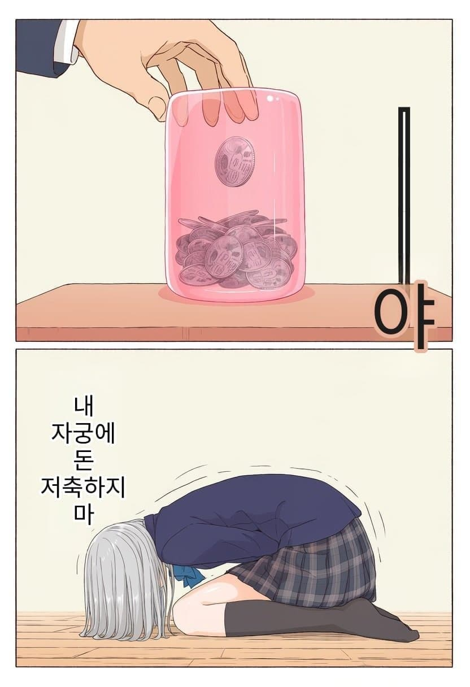
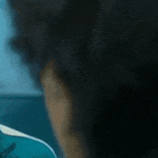
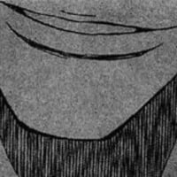
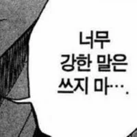
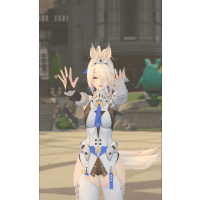

59 · 27 · 8 시간 전 · 원문

짤랑
수집 당시 댓글 27개
잠적자 · 13 시간 전
유아학교 · 13 시간 전
↳ 답글 · 우메와모모의평범한일상 · 11 시간 전
↳ 답글 · 순라면진한맛 · 11 시간 전
Sead · 13 시간 전
쟨 그럼 걸어다닐 때마다 짤랑짤랑 거리는거임?
↳ 답글 · shinoppㅡai · 12 시간 전
느낌만 나지 않을까? 소리까지 구현이면...
아니이개외안되 · 13 시간 전

하나코나나 · 13 시간 전
되게 넓네
던킨제로자두 · 13 시간 전
음습드립넷 · 13 시간 전
저건 아파서 쓰러진거임;
Montmartre · 11 시간 전
더나 · 10 시간 전
짤랑짤랑짤랑짤랑 으쓱으쓱
마술예장 · 9 시간 전
약후탈곡기 · 9 시간 전
금속 독올라오겠어..
Senarius · 9 시간 전
아침부터 이런게 올라오네 ㅋㅋ
따뜻한밥 · 9 시간 전


혓바닥휘날리며 · 9 시간 전
그럼 쟨 돼지 "저금통" 인거야?
창원시진해구이동거주중 · 9 시간 전
아ㅋㅋ 저금통 돈조금꺼내써볼까??
꿍l디 · 9 시간 전
생리할때 저금통 째는 날이네
촤리 · 8 시간 전
질 아님?
dhbwiq52v · 8 시간 전
ㄹㅇ 돈통이긴 한데 ㅋㅋㅋ
3대600까지 · 7 시간 전
ㅆㄷ 표시좀
너의목소리 · 4 시간 전
NoSugar · 4 시간 전

Yegor · 3 시간 전
이분돌잘알 · 3 시간 전
아씨발 감염 동전이얼마나 더러운데
도로로로롱 · 47 분 전
다른걸 넣어야지
댓글
수집 당시 댓글 27개
잠적자 · 13 시간 전
유아학교 · 13 시간 전
· 우메와모모의평범한일상 · 11 시간 전
· 순라면진한맛 · 11 시간 전
Sead · 13 시간 전
쟨 그럼 걸어다닐 때마다 짤랑짤랑 거리는거임?
· shinoppㅡai · 12 시간 전
느낌만 나지 않을까? 소리까지 구현이면...
아니이개외안되 · 13 시간 전

하나코나나 · 13 시간 전
되게 넓네
던킨제로자두 · 13 시간 전
음습드립넷 · 13 시간 전
저건 아파서 쓰러진거임;
Montmartre · 11 시간 전
더나 · 10 시간 전
짤랑짤랑짤랑짤랑 으쓱으쓱
마술예장 · 9 시간 전
약후탈곡기 · 9 시간 전
금속 독올라오겠어..
Senarius · 9 시간 전
아침부터 이런게 올라오네 ㅋㅋ
따뜻한밥 · 9 시간 전


혓바닥휘날리며 · 9 시간 전
그럼 쟨 돼지 "저금통" 인거야?
창원시진해구이동거주중 · 9 시간 전
아ㅋㅋ 저금통 돈조금꺼내써볼까??
꿍l디 · 9 시간 전
생리할때 저금통 째는 날이네
촤리 · 8 시간 전
질 아님?
dhbwiq52v · 8 시간 전
ㄹㅇ 돈통이긴 한데 ㅋㅋㅋ
3대600까지 · 7 시간 전
ㅆㄷ 표시좀
너의목소리 · 4 시간 전
NoSugar · 4 시간 전

Yegor · 3 시간 전
이분돌잘알 · 3 시간 전
아씨발 감염 동전이얼마나 더러운데
도로로로롱 · 47 분 전
다른걸 넣어야지